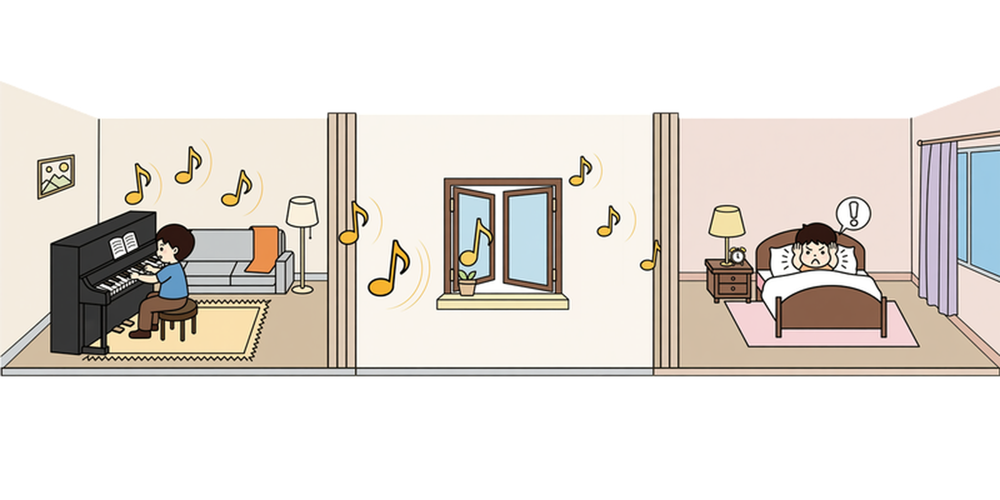
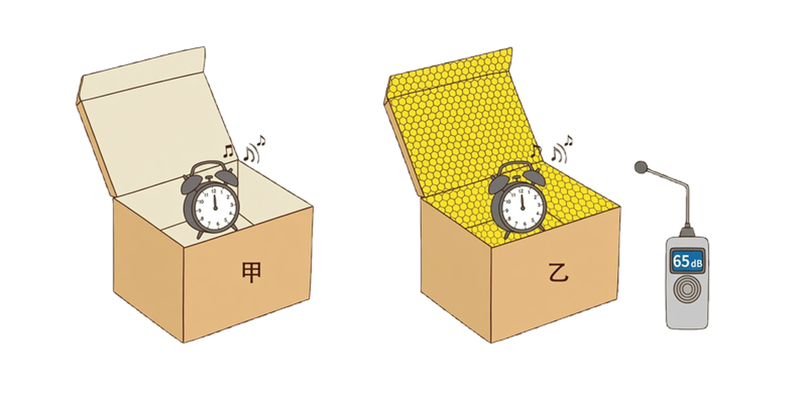

动手做一个隔音房间模型，在“做中学”理解控制噪声的实际意义。
当我们在家中弹奏乐器、欣赏音乐或观看电视节目时，有可能会打扰需要休息的家人和邻居。你有什么办法解决这个问题？

有同学设计了一个方案，打算将家中的一个房间改造为隔音房间，这样就不会彼此干扰。在方案实施前，我们可以通过制作模型来高效、经济地测试方案的可行性。请你根据以上思路，制作一个隔音房间的简易模型，并测试它的隔音性能。
可以从控制噪声的三个途径入手：防止噪声产生、阻断噪声传播、防止噪声进入耳朵。隔音房间主要属于“阻断噪声传播”。
具体思考方向包括：用什么材料阻挡声音？材料放在房间的哪些位置？如何固定材料？怎样测试隔音效果？
制作模型之前，我们需要考虑下面的问题。
“房间”选择：要有一定的结构强度，便于开口放置发声物体，且内部空间足够安装隔音材料。常见的包装盒、鞋盒大小适中，容易获取。
隔音材料选择：要兼顾隔音性能、厚度、易得性、安全性和环保性。材料太厚会占用太多“房间”空间，太薄则隔音效果差；材料要安全、环保、容易获取。
我们可以用包装盒或鞋盒充当“房间”，将一只闹钟放入其中模拟房间中发声的乐器或电视机。然后，在盒内相应区域安装能够隔音的材料，制作隔音房间模型。

上网查阅资料，了解不同材料的隔音性能以及它们的特点，尽量从常见材料中选取合适的材料。在注意隔音性能的同时，也要尽量减小材料的厚度，最大限度地保证“房间”的空间。
测试时，通过手机或计算机中的软件等先测量闹钟铃声的强弱，再测量经过隔音处理后闹钟铃声的强弱，通过比较前后的变化来评估模型的隔音性能。
对比实验思想：只有先测量处理前的声音强弱，再测量处理后的声音强弱，才能比较出隔音材料带来的效果。没有“处理前”的数据，就无法判断模型是否有效。
测量注意事项：应保持发声源（闹钟）音量、测量位置、周围环境等条件相同，只改变“是否加隔音材料”这一个因素；尽量使用同一台手机和同一个软件，并在同一位置测量。
应在满足基本隔音要求的前提下，尽量选择厚度小、隔音性能好的材料，或者优化材料的安装位置（如优先覆盖声音传播的主要路径），以减小对“房间”空间的占用。
同时，还要兼顾材料的易得性、安全性和环保性，不能只追求隔音效果而忽视实际可行性。